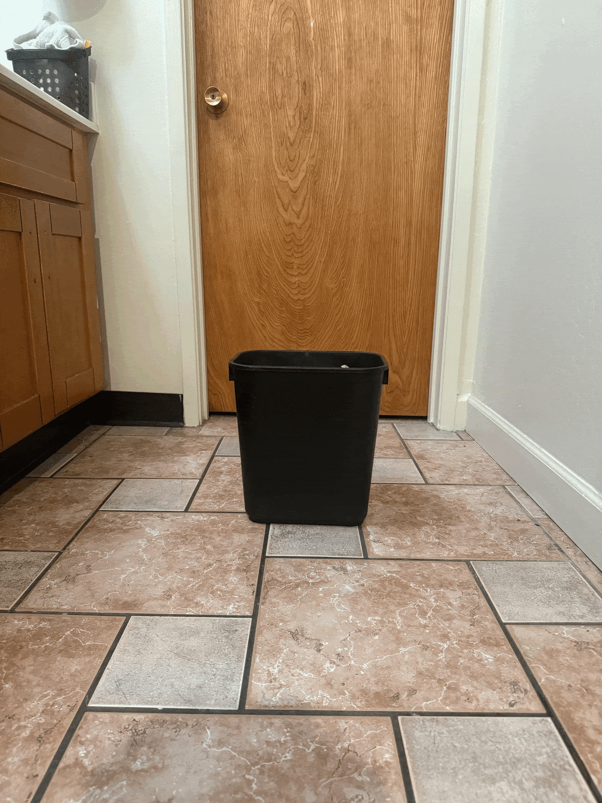

Project 0: Becoming Friends with Your Camera
Varun Vaidya
Selfie: The Wrong Way vs. The Right Way
Camera too close (wide‑angle distortion)
Step back and zoom in for natural proportions
Architectural Perspective Compression
Zoomed in from distance (compression)
Closer to subject (wider perspective)
The Dolly Zoom

Zooming in while moving back